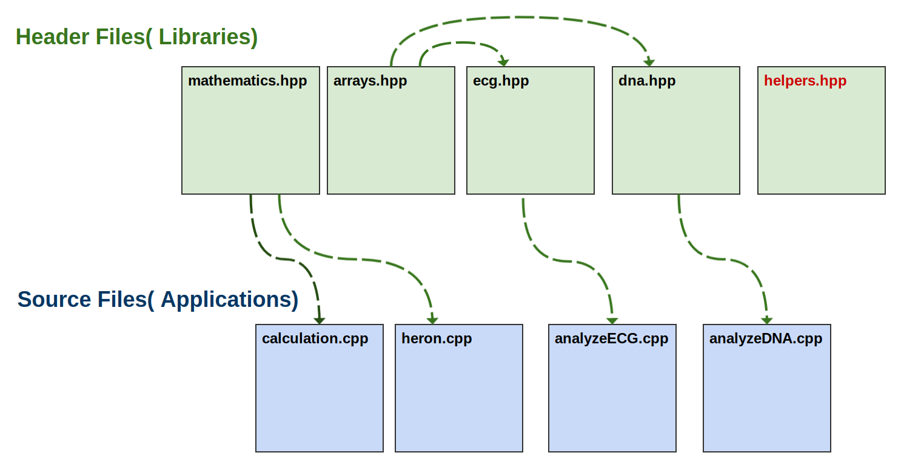

Week 7 - Part1: Revision
- Practices and Common Issues
- Revision on Data Structures
- Segmentation Fault (Core Dumped)
- More Exercises
Practices and Common Issues
Names and Scopes
Common Mistake: a custom type != a variable name
struct IntegerNode
{
int data;
IntegerNode *next;
};
struct IntegersLL
{
IntegerNode *head;
};
int size( IntegersLL &lst )
{
// Find mistakes
front = IntegersLL.head;
// Who is front?
// Who is IntegersLL?
// Who is IntegersLL.head?
}
- Don’t use any name unless it is declared.
frontis undeclared. IntegersLLis a type not a name of a variable.
Common Mistake: when passing by reference don’t mess with input data
int size( IntegersLL &lst )
{
// Find mistakes
int count = 0;
while( lst.head != nullptr )
{
count++;
lst.head = lst.head->next;
}
return count;
}
Common Mistake: Pointer to a Struct vs. Reference to a Struct vs. Name to a Struct
struct IntegerNode
{
int data;
IntegerNode *next;
};
struct IntegersLL
{
IntegerNode *head;
};
int size( IntegersLL &lst )
{
// Find two mistakes
int count = 0;
IntegersNode *current = lst->head;
while( current != nullptr )
{
count++;
current = current.next;
}
return count;
}
Functions
Bad Practice: Global Variables
As a rule of thumb, inside a function, all what you have got is the function input.
struct IntegerNode
{
int data;
IntegerNode *next;
};
struct IntegersLL
{
IntegerNode *head;
};
// Never do this. You are breaking the concept of a function!
IntegersLL myList;
int size( IntegersLL &lst )
{
int count = 0;
// This function will only work with the global variable `myList`
// We cannot apply this function to any other Linked List of integers!
IntegersNode *current = myList.head;
while( current != nullptr )
{
count++;
current = current.next;
}
return count;
}
The correct solution
struct IntegerNode
{
int data;
IntegerNode *next;
};
struct IntegersLL
{
IntegerNode *head;
};
int size( IntegersLL &lst )
{
int count = 0;
IntegersNode *current = lst.head;
while( current != nullptr )
{
count++;
current = current->next;
}
return count;
}
Calling a Function
#include "linkedlist.hpp"
#include <iostream>
int main()
{
list::IntegersLL samples;
// Why you do this?
std::cout << "size:" << list::size( IntegersLL &lst );
// Or this?
std::cout << "size:" << list::size( IntegersLL &samples );
// We already declared samples of type list::IntegersLL
std::cout << "size:" << list::size( samples );
}
Main Function
Useful Application
The main function is the program entry point. In practice, developers build libraries over libraries, in order to be finally used in the main function. Recall the diagrams of week 3.


Testing Application
It is always useful to make a file with a main function to test the functions and structures you have just developed so:
- You feel satisfied about what you have developed.
- Detecting any unexpected behavior, and accordingly helps you debug your code.
Each member in a group assignment is required to make a file with a main function to test his/her developed functions. Due discussion date.
Advanced: Unit Testing
In practice, testing libraries is carried out in a more formal and standardized methodologies. Although it is currently an advanced topic, you can read about Test-Driven Development (TDD) in the summer. In C++, there are famous unit testing frameworks, for example:
Revision on Data Structures
Arrays
Dynamic Arrays
Static Arrays
Linked Lists
Linked Lists using Pointers
Linked Lists using Arrays (new)
Abstract Data Types (ADT)
ADT: Queue
ADT: Stacks
Complexity Analysis: Big-Oh Notation
Segmentation Fault (Core Dumped)
Fact Although your application did compile without errors, doesn’t mean it is logically correct or should run as expected. So far, errors in C++ development can be classified into:
- Compilation errors.
-
Run-time errors (bugs).
- Logical error: you don’t get the expected output.
- Critical error: you are abusing the memory access. This will result in a crash with an ambiguous message emitted
Segmentation fault (Code Dumped).
The Segmentation fault error typically results after:
- Dereferencing a
nullptr. - Dereferencing an un-initialized pointer, as a side-effect of undefined behavior.
- Dereferencing a pointer of a de-allocated place:
- De-allocated place in stack memory after going out of scope.
- De-allocated place in heap memory after
deleteing that place using its pointer.
- Exceeding array boundaries.
Memory Management and Memory Leakage
Valgrind
Installing Valgrind
sudo apt-get install valgrind
Running Valgrind
In order to trace your code to the point of the crash you need to compile your code with an additional flag -g. The flag -g tells your compiler to compiler your program in Debugging mode.
g++ -g -std=c++11 -Wall test.cpp -o test
-gfor debugging mode.-std=c++11to use the C++ standards of 2011.-Wallto emit any compilation warnings, very useful flag.test.cppthe source file that has amainfunction.-o testa flag for the compiler output followed by the output name of the executable.
valgrind -v --leak-check=full --show-leak-kinds=all ./test